El universo
Conocé la ambientación, las reglas y como ingresar en el grupo.
Un nuevo universo. Nuevas alianzas. Una academia donde héroes de distintos mundos escriben una historia en común.
Conocé la ambientación, las reglas y como ingresar en el grupo.
Todo lo necesario para comprender los limites de los heroes.
Descubre quiénes integran la academia y qué lugares están disponibles.
Anuncios, eventos, novedades y comunicados de la administración.
[INFORMACIÓN CLASIFICADA].
¿Tenés dudas sobre la academia? Dejá tu mensaje para la administración.
Los personajes de HoYoverse llegan a una sociedad organizada alrededor de héroes, entrenamiento y desafíos. Esta es la puerta de entrada a nuestra historia.
La historia comienza acá.
Escuchame, en una sociedad donde los héroes son parte fundamental de la vida cotidiana, personas provenientes de distintas tierras comienzan a cruzar sus caminos. La academia abre sus puertas para recibirlos, estudiar sus habilidades y prepararlos para un futuro lleno de desafíos.
Todos conocemos que cada universo corre por sus propios terrenos, mas en esta oportunidad, cada juego será el país de origen de nuestros estudiantes, quienes han decidido cruzar los limites para alcanzar la super academia de heroes.
Personajes provenientes de Genshin Impact, la ciudad principal es la Gran Teyvat, seguida de las 8 ciudades que la conforman, Mondstadt, Liyue, Inazuma, Sumeru, Fontaine, Nod Krai, Snezhnaya. ¿Qué? ¿Otra ciudad? No, te confundes. Esas son todas.
Viajeros, personajes, trazacaminos de las estrellas, o la ciudad mas viva del mundo. Dividida en sus ciudades principales, Herta Espacial, El Luofu de Xianzhou, Penacony, Amphoreus y Plan Arcadia. ¿Qué? ¿Otra ciudad? No, te confundes. Esas son todas.
Agentes y personajes de la metropoli Nueva Eridu, con sus pequeños territorios, como al Isla de la Quietud, Estación Omond, Distrito de Vyrium, Distrito de Buastrum, Villardiente. ¿Qué? ¿Otra ciudad? No, te confundes. Esas son todas.
Después de mucho tiempo entrenando adolescentes y lanzandolos al peligro que suponía la pelea contra villanos, se llegó al acuerdo de que la juventud no podía vivir con ese estres. La primera escuela en evolucionar de ese antiguo método fue Teyvat Hero Academy, la cual el día de hoy solo recibe jovenes adultos como parte de entrenamiento de heroes.
Con un curso intensivo de reglas, entrenamiento y todos los conocimientos que rigen en la sociedad de heroes, las nuevas generaciones se lanzan a su trabajo con el corazón ardiendo de deseo por salvar al resto, ¿estás listo para entrar tu también?
Para no perdernos del buen camino.
Las reglas están sujetas a modificaciones dependiendo acciones emitidas en el grupo.
Para entendernos todos.
Las reglas están sujetas a modificaciones dependiendo acciones emitidas en el grupo.
Expedientes de la academia.
Expedientes de los personajes pertenecientes a los integrantes.
Origen: Genshin Impact.
Nombre de Héroe: Apodo aquí.
Don: Don aquí.
Edad: Edad aquí.
Historia: Historia aquí.
Origen: Honkai: Star Rail.
Nombre de Héroe: Apodo aquí.
Don: Don aquí.
Edad: Edad aquí.
Historia: Historia aquí.
Origen: Zenless Zone Zero.
Nombre de Héroe: Apodo aquí.
Don: Don aquí.
Edad: Edad aquí.
Historia: Historia aquí.
Profesores, héroes profesionales y personal de la academia.
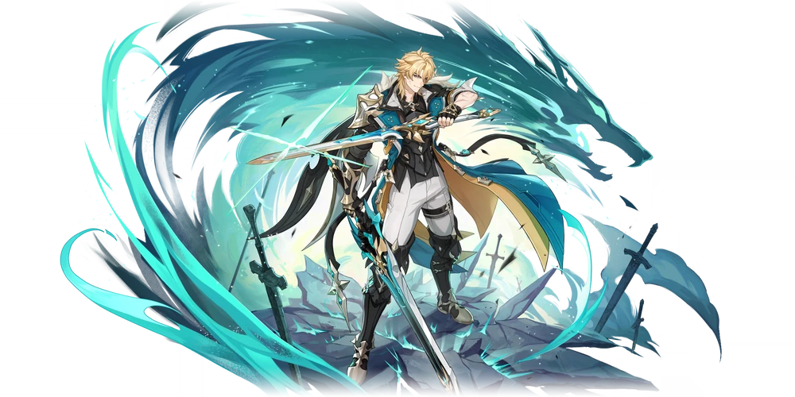
Origen: Genshin Impact.
Nombre de Héroe: KNIGHT BOREAS.
Don: Superpoder. Combate a los enemigos con una gran fuerza, es el Héroe Número 1 de la sociedad actual.
Edad: 45 años.
Historia: Durante sus años de preparatoria, Varka fue elegido por su maestra como sucesor de su don. En aquel entonces era un joven despreocupado, de modales cuestionables y sin grandes ambiciones, más allá de un sencillo deseo: conseguir que todos pudieran sonreír y tener un hogar al que regresar en paz. Nacido sin un don, recibió aquel legado como una oportunidad para cumplir su sueño y proteger a quienes lo necesitaran.
Con un entrenamiento incansable y una voluntad inquebrantable, Varka logró dominar el poder heredado y superar sus propios límites, hasta convertirse en el hombre más fuerte de la humanidad. Hoy, su nombre es sinónimo de esperanza y tranquilidad, reconocido como el mayor héroe de su generación y el pilar que sostiene la paz de este mundo.
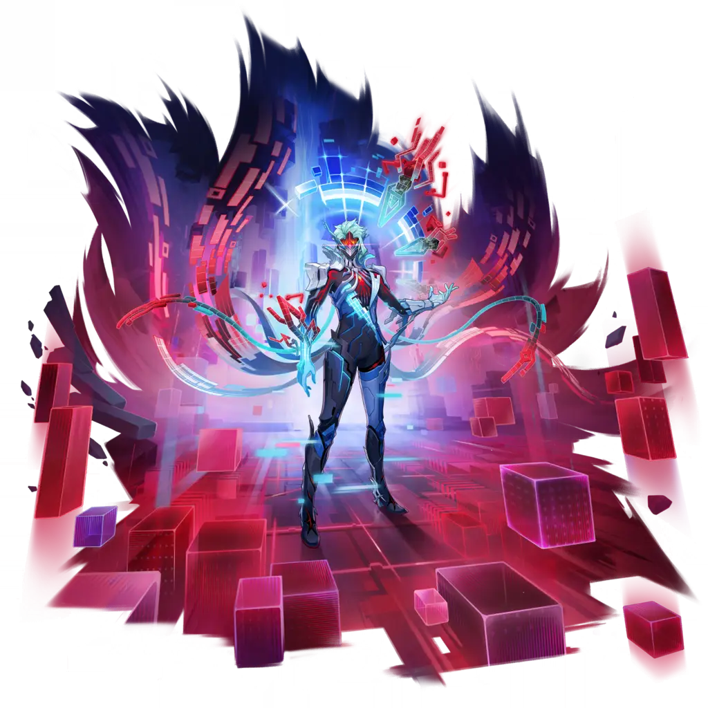
Origen: Genshin Impact.
Nombre de Héroe: Ill Dottore.
Don: Segmentación. Zandik puede generar copias de sí mismo que representan distintas etapas de su vida, desde la infancia hasta la vejez. Cada una posee la apariencia, los conocimientos y las capacidades físicas correspondientes a esa edad, además de cierta autonomía para actuar y razonar.
Las distintas versiones pueden colaborar entre sí, lo que le permite realizar investigaciones desde perspectivas diferentes y trabajar en varios experimentos al mismo tiempo.
Edad: 85 años.
Historia: Fue marcado por el abandono de su familia y el rechazo de la academia en la que esperaba desarrollar sus investigaciones. Su ego lo llevó a convertirse en un investigador brillante, aunque de métodos poco convencionales. Su don, Segmentación, le permite multiplicarse en distintas etapas de su vida, una capacidad que aprovecha para llevar a cabo sus numerosos experimentos.
Obtuvo su licencia de héroe principalmente para conseguir autorización legal para utilizar su don en sus investigaciones. Sin embargo, terminó incorporándose a Teyvat Hero Academy como profesor de Soporte, donde descubrió un inesperado interés por transmitir sus conocimientos y observar el desarrollo de sus estudiantes.
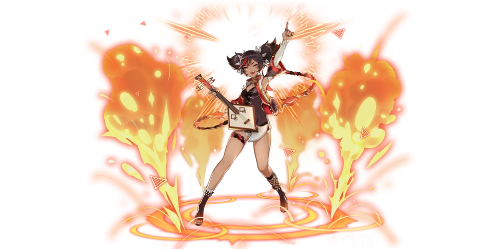
Origen: Genshin Impact.
Nombre de Héroe: Encore Riff.
Don: Resonancia. Su don le permite generar y manipular vibraciones sonoras a través de la música, utilizando principalmente su guitarra como medio de conducción. Puede concentrar las ondas en potentes descargas capaces de derribar adversarios o liberarlas en forma de campos vibratorios que amortiguan impactos, desvían proyectiles y protegen a quienes se encuentren cerca. Cuanto más intenso es el ritmo, mayor es la fuerza de sus ondas, aunque necesita mantener el control para no afectar también a sus aliados.
Edad: 23 años.
Historia: Desde pequeña, Xinyan sintió una enorme pasión por la música rock, un género que no siempre fue bien recibido en su entorno. Lejos de abandonar sus gustos, decidió convertirlos en una forma de expresión y encontró en su don, Resonancia, una manera de llevar su música más allá de los escenarios. Durante sus años como estudiante de Teyvat Hero Academy, destacó por su estilo poco convencional y su capacidad para combinar ataques y defensas mediante ondas sonoras.
Tras graduarse, decidió iniciar su carrera como heroína profesional, llevando consigo la misma energía y determinación que la caracterizaron durante su formación.
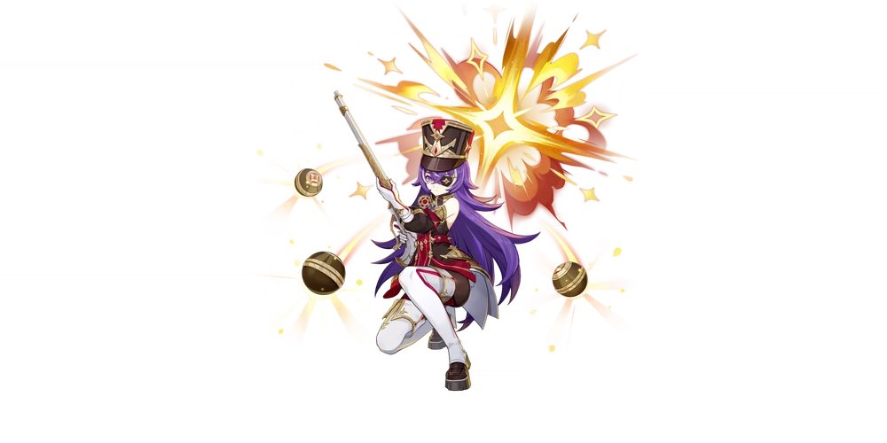
Origen: Genshin Impact.
Nombre de Héroe: Snipe.
Don: Gran puntería. Puede alterar la trayectoria de los proyectiles que dispara con sus armas de fuego, modificando su dirección durante el recorrido para alcanzar objetivos desde ángulos difíciles o superar obstáculos. Esto le permite realizar disparos de gran precisión, interceptar amenazas y neutralizar adversarios sin necesidad de enfrentarlos directamente.
Su habilidad depende de su concentración y de su capacidad para calcular las trayectorias. Cuanto más complejo sea el recorrido que intenta modificar, mayor será el esfuerzo que requiere. Además, no puede controlar proyectiles ajenos ni alterar indefinidamente la trayectoria de sus disparos.
Edad: 26 años.
Historia: Desde joven, Chevreuse sintió una profunda vocación por la seguridad pública, lo que la llevó a ingresar en la Academia de Seguridad Pública de Fontaine. Durante su formación destacó por su disciplina, determinación y habilidad con las armas de fuego. Su don le permite alterar la trayectoria de los proyectiles que dispara, convirtiéndola en una tiradora excepcionalmente precisa.
Tras graduarse, decidió obtener su licencia de heroína con un propósito particular: demostrar que las fuerzas policiales también tenían un lugar indispensable en la sociedad heroica.
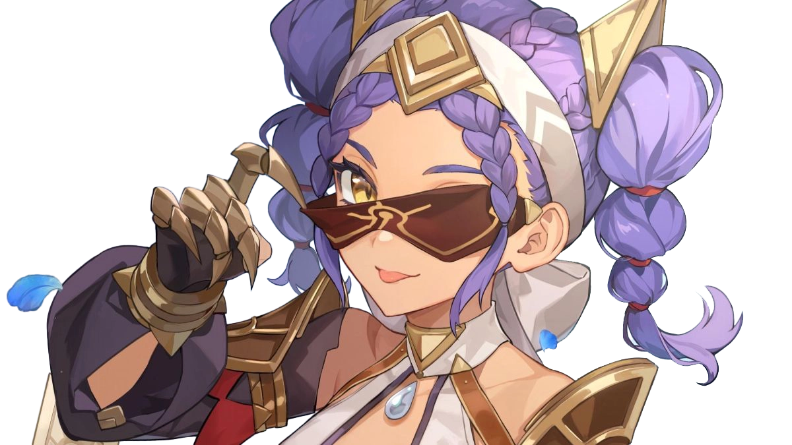
Origen: Genshin Impact.
Nombre de Héroe: Desert Cipher.
Don: Proyección Geométrica. Jeht puede generar construcciones temporales de energía sólida a partir de patrones geométricos que visualiza mentalmente. Estas proyecciones pueden adoptar distintas formas y tamaños, permitiéndole crear herramientas, piezas mecánicas, estructuras y dispositivos sencillos. Cuanto más complejo sea el diseño, mayor concentración y energía requiere mantenerlo. Las construcciones no poseen funciones automáticas ni pueden reproducir mecanismos que Jeht no comprenda.
Edad: 24 años.
Historia: Jeht ingresó a Teyvat Hero Academy como estudiante del departamento de Soporte, donde destacó por su ingenio y habilidad para desarrollar dispositivos tecnológicos. Durante su formación creó a BenBen, una máquina de asistencia equipada con un avanzado sistema de análisis, capaz de procesar información y evaluar situaciones complejas. Con el tiempo, BenBen comenzó a identificar en Jeht aptitudes para el trabajo heroico, llegando a recomendarle que solicitara un traslado al departamento de Heroísmo.
Aunque inicialmente dudó de aquella sugerencia, Jeht decidió poner a prueba sus capacidades y terminó realizando el cambio de departamento. Con esfuerzo y dedicación, consiguió graduarse como heroína profesional, conservando a BenBen como su compañero y asistente durante sus operaciones. Actualmente, ambos trabajan juntos, combinando el ingenio de Jeht con la capacidad analítica de su creación.
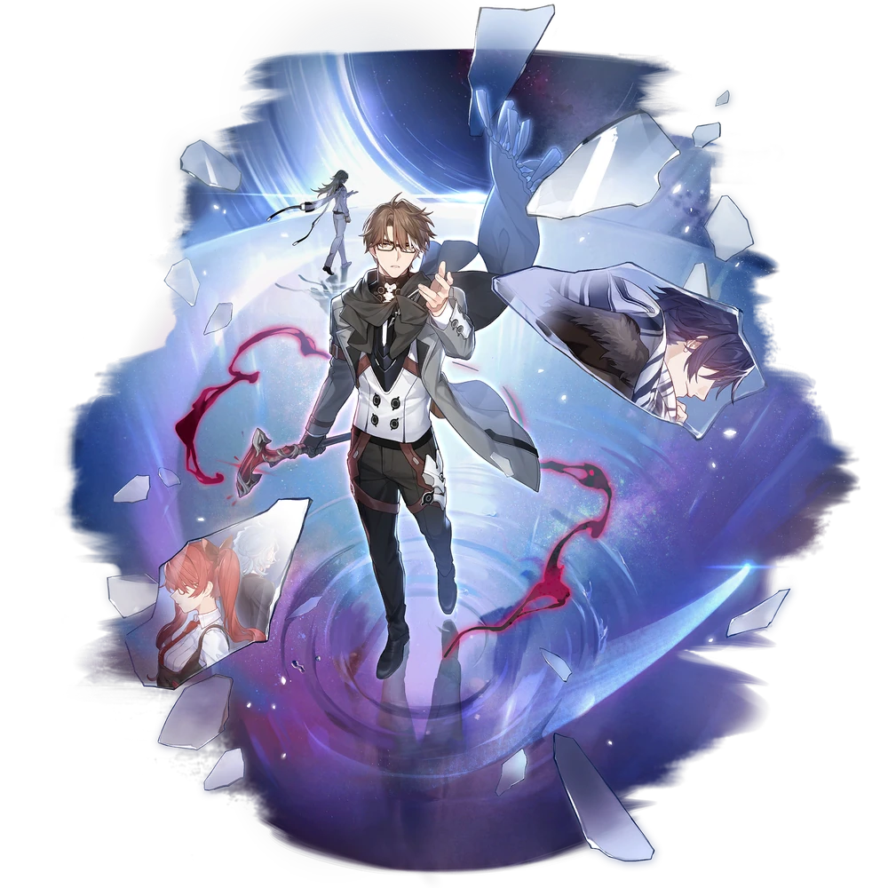
Origen: Honkai: Star Rail.
Nombre de Héroe: Eventorizon.
Don: Singularidad. Welt puede manipular la gravedad dentro de un área determinada, creando campos gravitatorios que le permiten atraer, repeler, inmovilizar o alterar la trayectoria de objetos y personas. Similar a un pequeño agujero negro, capaz de atraer y comprimir todo lo que se encuentre cerca.
Edad: 51 años.
Historia: Welt Yang fue un héroe profesional de gran prestigio, reconocido por su sabiduría, serenidad y extraordinario dominio de su don, Singularidad.
Decidió retirarse de la actividad heroica para dedicar sus esfuerzos a la formación de nuevos talentos. Actualmente forma parte de Teyvat Hero Academy como profesor de Heroísmo, donde transmite a sus estudiantes los conocimientos y la experiencia adquiridos durante sus años como héroe. Aunque ya no se encuentra en la primera línea, su capacidad y criterio siguen siendo los de un profesional excepcional.
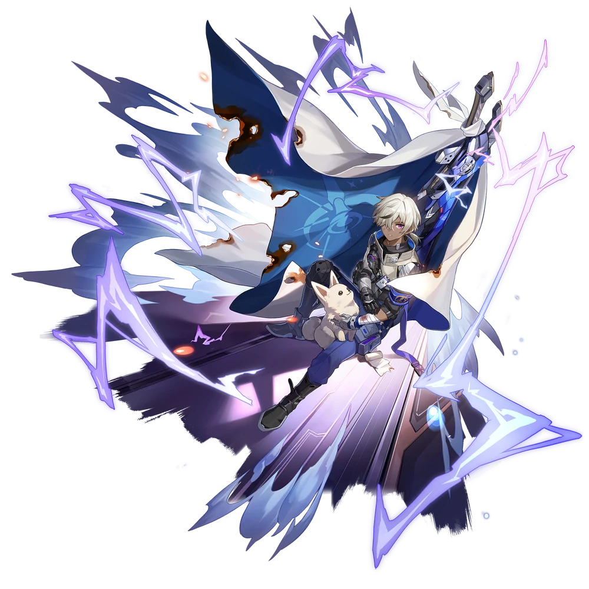
Origen: Honkai: Star Rail.
Nombre de Héroe: Twinpulse.
Don: Vinculo. Arlan puede establecer un vínculo con Peppy que les permite compartir sentidos, coordinar movimientos y transferirse parte de su resistencia física. Incluso pueden intercambiar posiciones a corta distancia.
Edad: 24 años.
Historia: Arlan creció en Ciudad Espacial Herta, una metrópolis reconocida por sus avances tecnológicos y sus instituciones de investigación. Durante su juventud conoció a Peppy, un pequeño perro que terminó convirtiéndose en su compañero inseparable, conectándose a él y descubriendo su poder. Su don, Vinculo, le permite establecer una conexión especial con él, compartiendo sentidos, coordinando movimientos, siendo capaz incluso de cambiar lugares con él.
Tras completar su formación y obtener su licencia profesional, Arlan comenzó su carrera como héroe, destacándose por su responsabilidad y su disposición a ponerse en peligro por los demás.
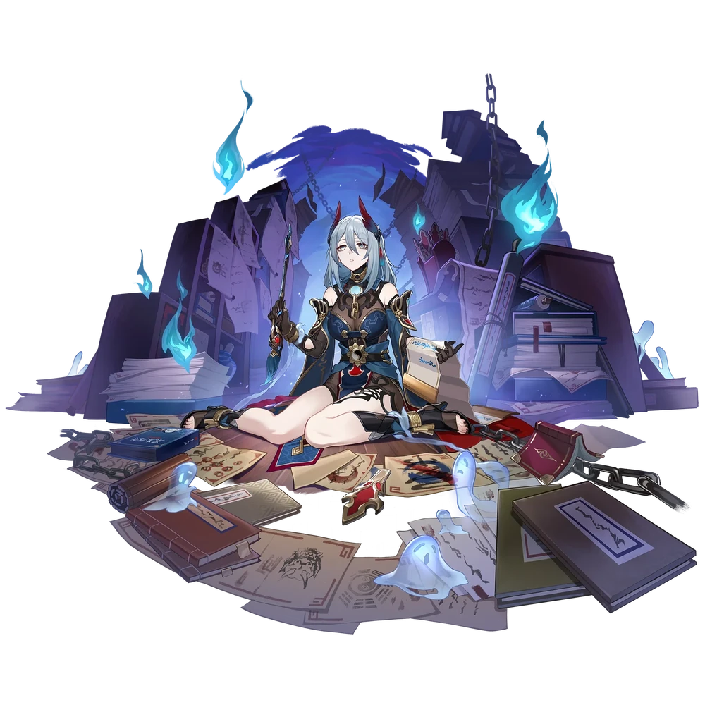
Origen: Honkai: Star Rail.
Nombre de Héroe: La Heroína Jueza: Hayna
Don: Cadenas del Veredicto Puede generar cadenas de energía sólida desde superficies cercanas, especialmente el suelo, y manipularlas a voluntad. Estas cadenas pueden emerger bajo los pies de sus objetivos, envolver sus extremidades o sujetarlos contra estructuras, permitiéndole inmovilizar a varios adversarios y controlar sus movimientos. También puede utilizarlas para bloquear caminos, crear barreras o limitar el espacio de combate. Si no come bien, las cadenas no serán muy precisas.
Edad: 29 años.
Historia: Lo que impulsó a Hayna a dar el uso de su don a la comunidad no fue ver a un heroe inspirandola, sino ella misma. Mientras muchos veían las cadenas como una herramienta de combate, ella comenzó a interesarse por su potencial para detener amenazas sin necesidad de recurrir a la violencia. Aquella perspectiva despertó su curiosidad por la justicia y el funcionamiento de las leyes, llevándola a estudiar los procedimientos de captura y las responsabilidades de quienes hacen cumplir la ley.
Con los años, Hanya consiguió convertirse en heroína profesional, especializándose en la detención y neutralización de criminales. Su seriedad, disciplina y particular sentido del deber le valieron el reconocimiento como La Heroína Jueza, título que utiliza como única identidad heroica.
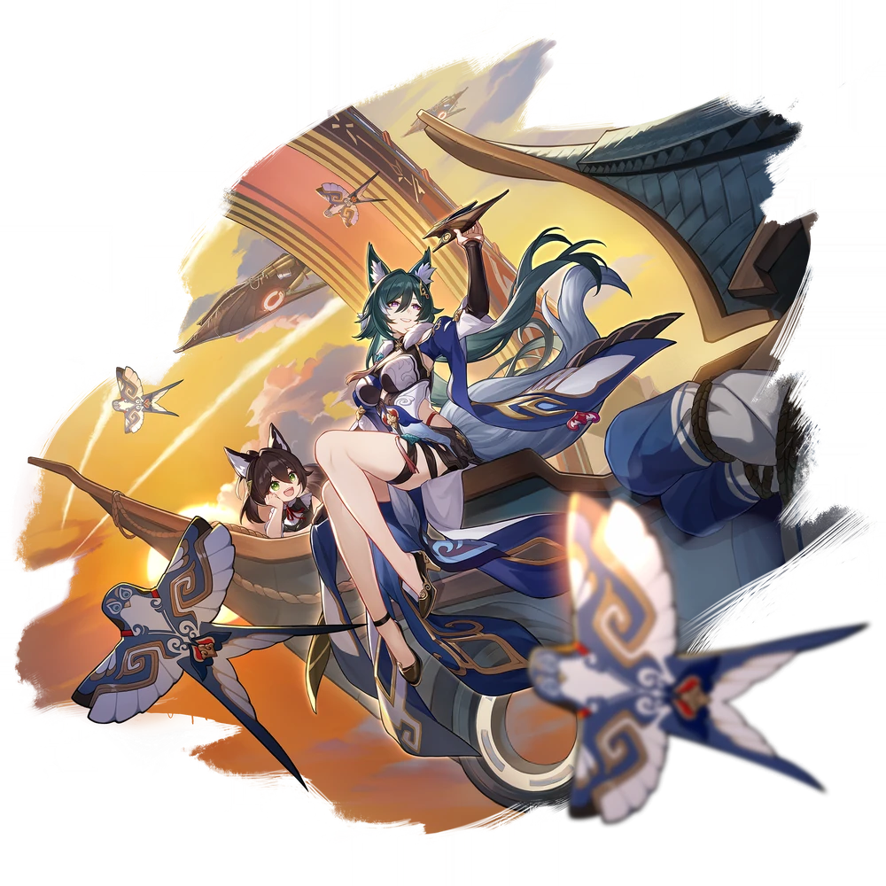
Origen: Honkai: Star Rail.
Nombre de Héroe: Sovereign.
Don: Campo de Dominio. Yukong puede establecer un área de influencia en la que controla la dirección y la intensidad de las fuerzas físicas que actúan sobre los objetos. Podría desviar ataques, frenar proyectiles, alterar movimientos y proteger a varias personas. Su precisión y experiencia serían fundamentales para aprovecharlo.
Edad: 49 años.
Historia: Yukong nació y creció en el Luofu, donde desde temprana edad demostró un talento excepcional. Su don, Campo de Dominio, le permite establecer un área de influencia dentro de la cual puede alterar la dirección y la intensidad de las fuerzas físicas, desviando ataques, deteniendo objetos en movimiento y modificando trayectorias. Aunque dominar semejante capacidad exigió años de entrenamiento, su talento natural y su disciplina pronto llamaron la atención de distintas instituciones dedicadas a la formación de héroes.
Varias academias manifestaron interés en incorporarla, pero Yukong decidió aceptar la recomendación de Teyvat Hero Academy. Su prestigio internacional y la distancia respecto de su hogar representaban una oportunidad para independizarse y construir una trayectoria propia. Tras completar su formación, se graduó con excelentes resultados y comenzó una extensa carrera como heroína profesional. A sus 49 años, continúa en actividad y forma parte del Top 10 de héroes de Teyvat.
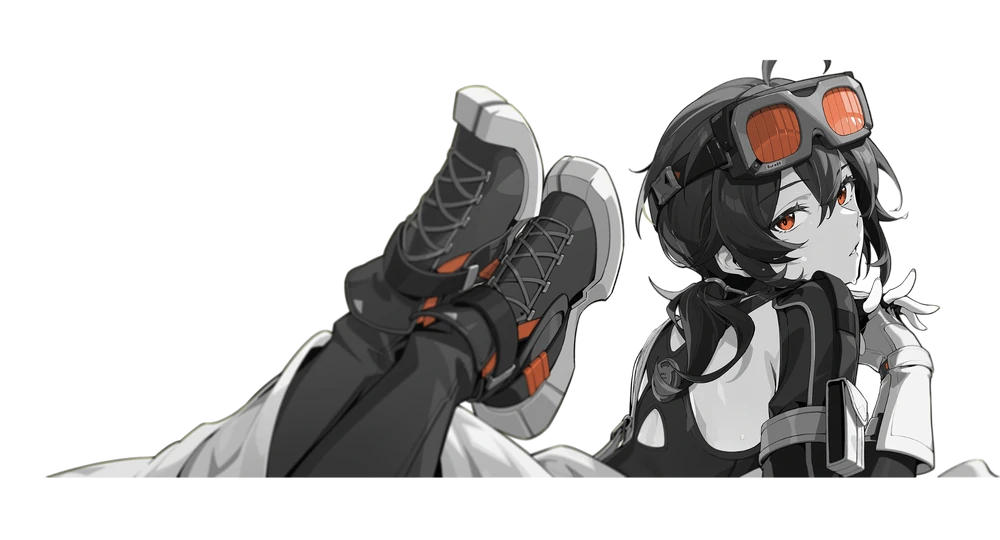
Origen: Zenless Zone Zero.
Nombre de Héroe: Gearheart.
Don: Tecnomecánica. Grace puede percibir, comprender y manipular los mecanismos internos de dispositivos y estructuras mecánicas mediante impulsos electromagnéticos que genera con su cuerpo.
Edad: 39 años.
Historia: Desde muy joven, Grace Howard demostró una fascinación especial por la maquinaria y los mecanismos. Su curiosidad la llevó a especializarse en ingeniería y desarrollo tecnológico, destacándose por su capacidad para diseñar y mejorar equipamiento. Su don, Tecnomecánica, le permite interactuar con mecanismos y alterar temporalmente su funcionamiento.
Gracias a sus conocimientos y talento, consiguió incorporarse al plantel docente de Teyvat Hero Academy como profesora de Soporte. Entusiasta y apasionada por su trabajo, Grace disfruta transmitiendo sus conocimientos, aunque su obsesión por las máquinas puede hacer que pierda la noción del tiempo cuando tiene un proyecto interesante entre manos.
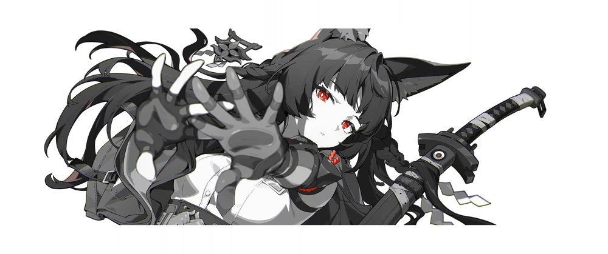
Origen: Zenless Zone Zero.
Nombre de Héroe: Imperatrix.
Don: Corte Absoluto. Le permite concentrar una fuerza extraordinaria en el filo de cualquier arma que empuñe, aumentando enormemente su capacidad de corte. Mediante un dominio preciso de esta fuerza, puede proyectar tajos a distancia y atravesar materiales extremadamente resistentes. Sin embargo, la potencia de sus ataques depende de su concentración, resistencia física y dominio del arma.
Edad: 37 años.
Historia: Hoshimi Miyabi es la heredera de una prestigiosa familia de espadachines, cuya tradición marcó profundamente su formación. Gracias a años de entrenamiento y una disciplina excepcional, consiguió convertirse en una heroína profesional de gran renombre, destacándose por su destreza con la espada y su eficacia en operaciones de alto riesgo. Bajo el nombre de Imperatrix, construyó una reputación propia, honrando el legado de su familia.
Tras una larga trayectoria al frente de equipos de intervención, Miyabi aceptó incorporarse a Teyvat Hero Academy como profesora de Heroísmo. Exigente y dedicada, busca transmitir a sus estudiantes la disciplina, la precisión y el sentido de responsabilidad que considera indispensables para convertirse en verdaderos héroes.
Origen: Zenless Zone Zero.
Nombre de Héroe: The Indomitable Steel Hurricane.
Don: Troque. Puede generar y controlar fuerzas rotacionales, aumentando la velocidad y potencia de giro de cualquier objeto que sostenga. Su taladro de soporte aprovecha esta capacidad para perforar materiales resistentes y ejecutar ataques devastadores.
Edad: 26 años.
Historia: Anton nació y creció en New Eridu, donde desarrolló desde joven una gran afinidad por la maquinaria y el trabajo industrial. Durante años se dedicó al sector de la construcción, destacándose por su fuerza, entusiasmo y habilidad con las herramientas. Fue allí donde escuchó por primera vez la historia de Ben Bigger, un trabajador de Belobog Heavy Industries que, durante un accidente laboral, había utilizado su don para salvar a sus compañeros de una muerte segura. La historia lo impresionó profundamente: para Anton, Ben representaba todo lo que debía ser un verdadero héroe, alguien capaz de utilizar su fuerza para proteger a los demás sin esperar nada a cambio. Desde entonces, comenzó a verlo como un modelo a seguir y a considerar seriamente la posibilidad de convertirse en héroe profesional.
Inspirado por aquel ejemplo, Anton decidió prepararse para seguir sus pasos. Aunque nunca asistió a una academia especializada, completó diversos cursos de formación y obtuvo su licencia heroica por vías alternativas, compaginando sus estudios con sus responsabilidades laborales. Tiene a su inseparable taladro de fabricación propia, al que llama cariñosamente «Bro». Actualmente, con 26 años, está dando sus primeros pasos en el mundo profesional, decidido a demostrar que cualquiera puede convertirse en un héroe si tiene la determinación suficiente para proteger a los demás.
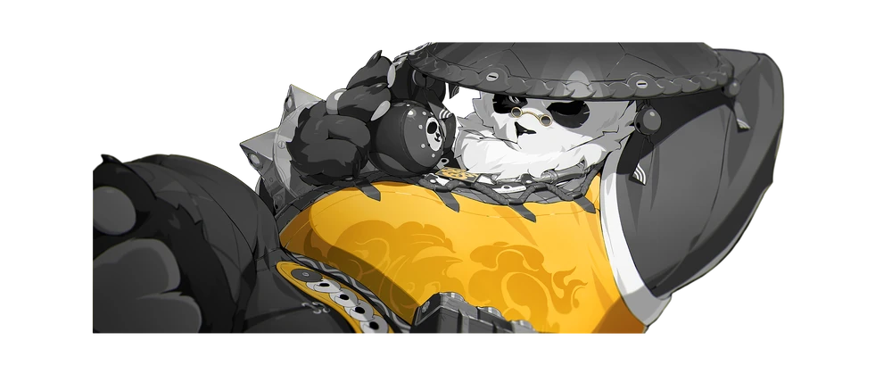
Origen: Zenless Zone Zero.
Nombre de Héroe: Heroe de artes marciales: Pan Po.
Don: Puño Celestial. Pan puede acumular y concentrar energía en sus manos, envolviéndolas en una manifestación luminosa que incrementa enormemente la potencia de sus golpes. Esta energía puede liberarse mediante puñetazos, patadas y técnicas de artes marciales, generando impactos capaces de atravesar defensas resistentes y producir ondas de choque. Con suficiente concentración, también puede proyectar breves descargas de energía a corta distancia.
Edad: 30 años.
Historia: La vida de Pan Yinhu no comenzó con demasiadas alegrías. Durante buena parte de su infancia tuvo que sobrevivir en las calles, buscando entre la basura cualquier sobra que pudiera llevarse a la boca. A pesar de contar con un don capaz de otorgarle una fuerza extraordinaria, se negaba a utilizarlo para conseguir beneficios personales, pues no consideraba justo aprovecharse de sus capacidades para obtener algo que otros no podían conseguir. Su suerte cambió cuando un héroe local lo encontró hurgando entre los desperdicios de su dojo y, en lugar de echarlo, decidió acogerlo bajo su cuidado. Allí encontró un hogar, aprendió artes marciales y comenzó a entrenar su don, Puño Celestial, para convertirlo en una herramienta que pudiera utilizar en beneficio de los demás.
Con los años, Pan decidió seguir los pasos de aquel hombre y convertirse en héroe profesional. Aunque su motivación nunca fue alcanzar la gloria ni convertirse en una figura legendaria, consideraba que el heroísmo era una profesión digna, con buenas oportunidades para construir una vida estable. Sin embargo, detrás de esa perspectiva práctica existe un propósito mucho más personal: ayudar a quienes atraviesan situaciones similares a las que él vivió, ofreciendo una mano a quienes no siempre tienen a quién acudir. Actualmente forma parte del Top 10 de Teyvat y, fuera de sus actividades profesionales, disfruta de la cocina, una pasión que nació de su propia necesidad de alimentarse adecuadamente y terminó convirtiéndose en uno de sus mayores placeres.
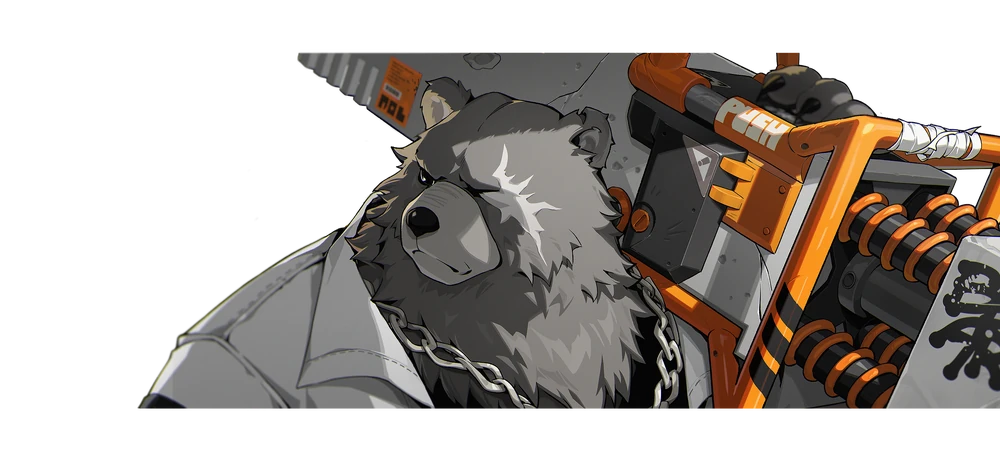
Origen: Zenless Zone Zero.
Nombre de Héroe: Deadlock.
Don: Punto Ciego. Ben puede identificar y establecer puntos vulnerables en objetos y superficies mediante una división proporcional de sus estructuras. Al golpear el punto determinado, concentra la fuerza de su impacto en esa zona, multiplicando considerablemente el daño producido. Esta habilidad le permite fracturar materiales resistentes, romper defensas y encontrar puntos débiles incluso en estructuras de gran tamaño.
Edad: 47 años.
Historia: Ben Bigger siempre fue un hombre tranquilo y responsable, que encontraba satisfacción en su trabajo en Belobog Heavy Industries. Se desempeñó como operador de maquinaria pesada, destacándose por su fuerza y su meticulosidad. Aunque nunca había considerado convertirse en héroe, su vida tomó un rumbo inesperado durante un accidente laboral, cuando una estructura comenzó a derrumbarse sobre varios de sus compañeros. Sin dudarlo, Ben utilizó su don para identificar el punto vulnerable de una pared y destruirla antes de que pudiera aplastarlos. Su intervención consiguió salvar varias vidas y llamó la atención de quienes reconocieron en él las cualidades de un verdadero héroe.
Aquel acontecimiento lo llevó a reconsiderar el alcance de sus propias capacidades. Lo que inicialmente había sido un acto instintivo de protección terminó convirtiéndose en el comienzo de una nueva vocación. Con el tiempo, Ben decidió formarse y obtener su licencia profesional, adoptando el nombre de Deadlock. Actualmente forma parte del Top 10 de héroes de Teyvat, aunque conserva la humildad y el sentido de responsabilidad que siempre lo caracterizaron. Para él, ser héroe no consiste en alcanzar la fama, sino en tener la fuerza suficiente para evitar que otros sufran.
Noticias desde la administración.
Este espacio estará destinado a novedades y comunicados del grupo.
¡Bienvenida del curso! El festival de apertura se dará cuando todos los alumnos hayan completado su examen de ingreso.
Reservas, cambios en las reglas y novedades de la academia.
Este archivo contiene información reservada para integrantes autorizados de Teyvat Hero Academy.
Introduce la clave de acceso para desbloquear los canales de comunicación.
¡Bienvenido/a! Estos son los accesos al grupo:
Reemplazá los enlaces de ejemplo por las invitaciones reales.¿Tenés alguna duda sobre la academia? ¿Querés consultar algo antes de ingresar o necesitás comunicarte con la administración? ¡Dejanos tu mensaje! Lo revisaremos a la brevedad.
Este buzón está destinado a consultas sobre el funcionamiento del grupo, la ambientación, los personajes y el ingreso a la academia. Para asuntos personales, la administración podrá continuar la conversación por WhatsApp.